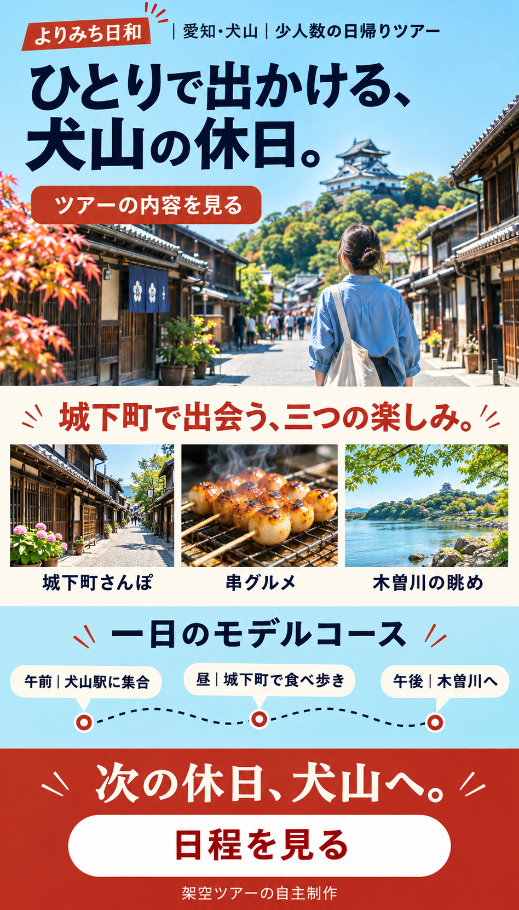

城下町さんぽ
町家が並ぶ通りから、気になった小路へ。足を止めて景色を楽しむ時間もとります。

町家が並ぶ通りから、気になった小路へ。足を止めて景色を楽しむ時間もとります。
串に刺さったおやつを探しながら、昼は自由に食べ歩き。お店はその日の気分で選べます。
午後は川辺へ。街歩きのあとに、木曽川沿いの景色を眺めます。
掲載写真はポートフォリオ用の生成イメージです。
昼の自由時間
串のおやつを買ってひと休みしたり、町家の軒先や看板を眺めたり。昼の自由時間は、気になった場所にご自身のペースで立ち寄れます。出発前に再集合の場所と目安の時間をご案内します。
ガイドと顔を合わせ、城下町まで一緒に歩きます。
自由時間に、おやつや昼食を選びます。
川辺を散策し、犬山駅で解散する想定です。
時刻はモデルコースの目安です。
よりみち日和の案内方針
移動や立ち寄り先の案内は少人数で。昼の自由時間には、自分のペースでお店を見たり、写真を撮ったりできます。
犬山駅からの同行、城下町と木曽川沿いの散策案内を想定しています。
集合場所までの交通費、昼食や食べ歩き、お土産は各自で用意する想定です。
参加前の確認
一人での参加を想定した少人数ツアーです。集合後はガイドと一緒に移動し、昼はご自身のペースで過ごせます。
モデルコースは犬山駅から城下町と川辺を歩く内容です。参加を検討する際の目安として、上の行程をご覧ください。
少雨なら雨具を用意して散策する想定です。天候に応じて屋外の立ち寄り先を調整する場合があります。
日程の選択から、参加内容を確認するまでを試せます。
下の日程はサンプルです。